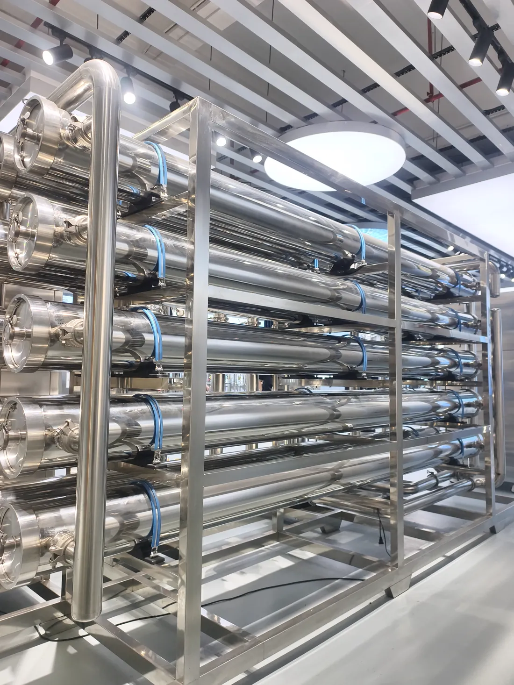
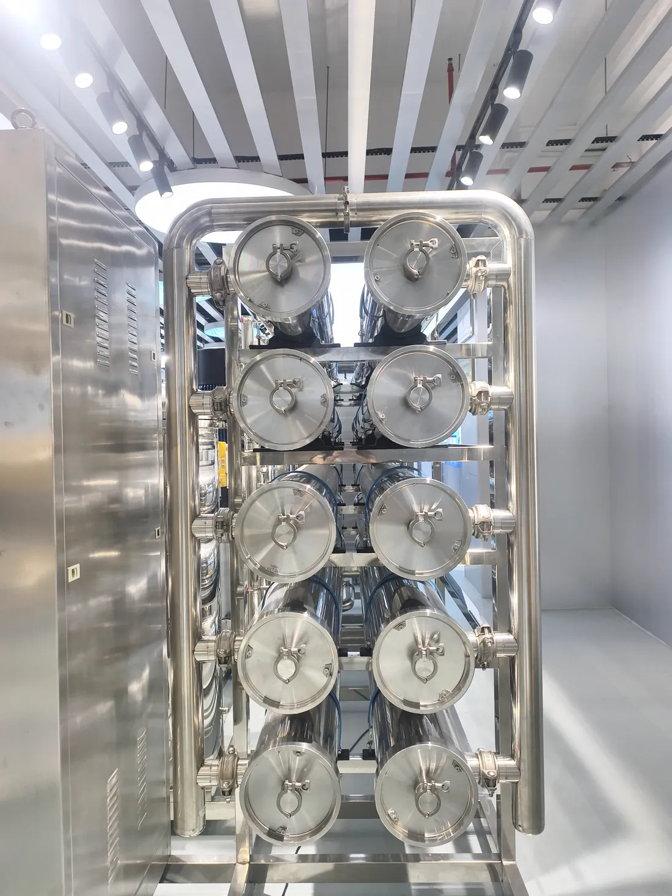
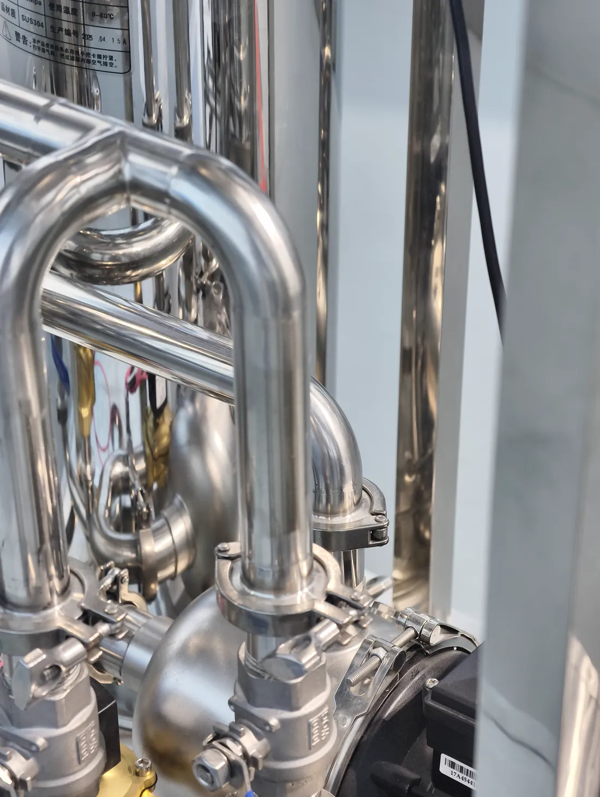
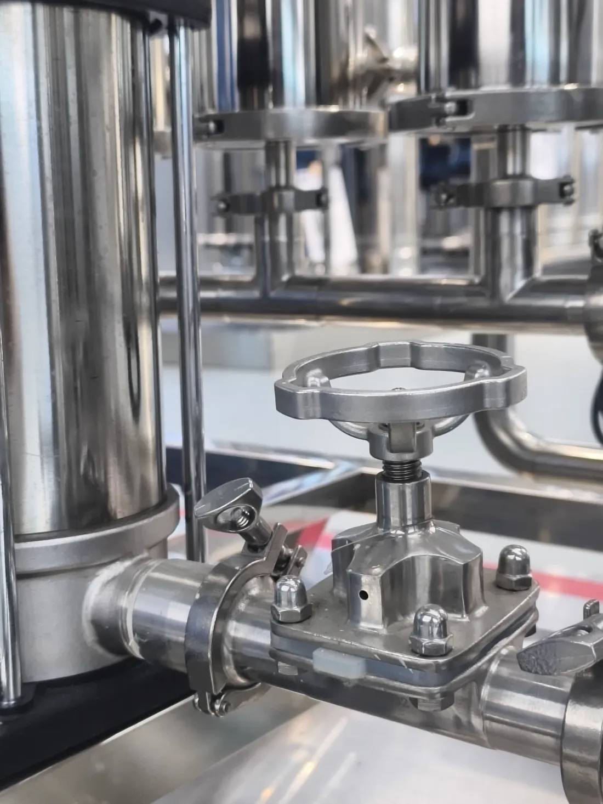
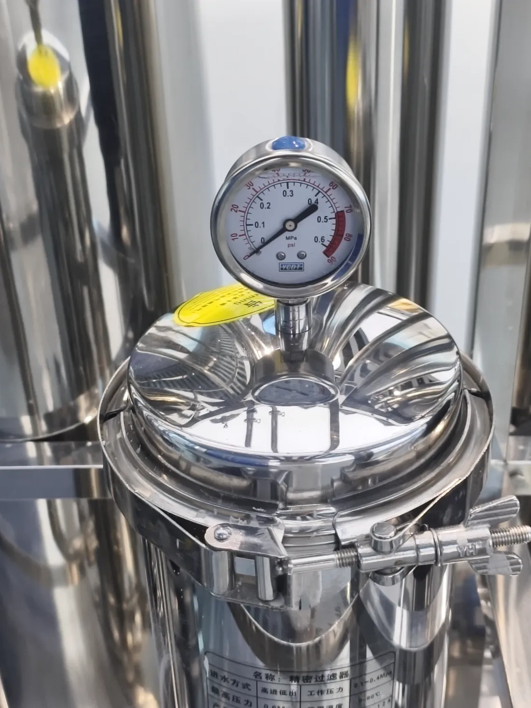
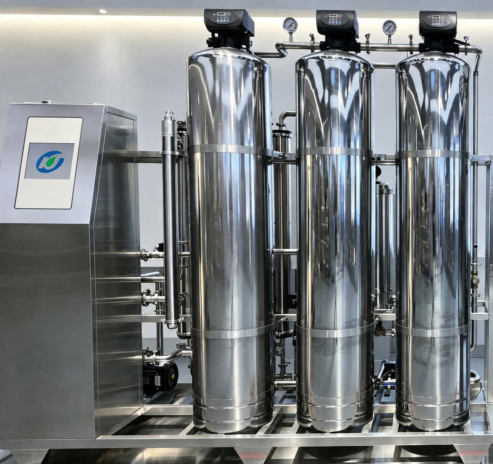

Home/Products/Single & Double Stage Reverse Osmosis System
Single & Double Stage Reverse Osmosis System
Industrial RO Pure Water Equipment
One engineering platform, two purity levels: single stage RO delivers economical pure water at ≤10 μS/cm for general industry, and double stage RO adds a second membrane pass for ≤3 μS/cm permeate feeding electronics, pharmaceutical and EDI duties.
1-Year Warranty
72-Hr Spare-Parts Dispatch
24-Hr Response
OEM / ODM
PLC Auto-Run
97–99% Salt Rejection
1-year whole-machine warranty; membranes, UV lamps, cartridges and other consumables excluded. First-tier brand membranes and components (e.g., Dow, Hydranautics) and control configuration are selected for your feed-water scenario and quality targets.
KONCHEINDUSTRIAL WATER TREATMENT SYSTEMSMODEL KONCHE RO-S / RO-D · SINGLE & DOUBLE STAGE REVERSE OSMOSISPLC AUTO CONTROLONLINE MONITORINGEDI-READY OPTIONENGINEERED BY KONCHE · 2026






PRODUCT DOCUMENTATION
For boiler make-up, electroplating rinse, food ingredients and chemical processes, single stage RO is often the most economical route to stable pure water. When the conductivity target drops to ≤3 μS/cm or the water feeds EDI, double stage RO adds the second pass the duty requires.
Product documentation
A single stage reverse osmosis (RO) system is a one-pass, pressure-driven membrane train that rejects 97–99% of dissolved salts and supplies industrial pure water with conductivity up to 10 μS/cm. A double stage RO system passes first-stage permeate through a second membrane stage for deeper separation, polishing product water to ≤3 μS/cm at a total recovery of at least 75% in suitable designs, and is a common feed stage ahead of EDI ultrapure trains. Typical KONCHE configurations span 0.25–50 m³/h at operating pressures of 1.0–1.6 MPa for single stage and 1.0–1.5 MPa for double stage, with PLC control and online monitoring; brackish-water duties typically use 0.8–1.5 kWh/m³, protected by multi-media, activated-carbon, softening and 5 μm security filtration matched to the verified feed-water report. Both configurations share one engineering platform, so a single-stage plant can reserve interfaces for a future second-pass or EDI upgrade.
KEY COMPONENTS
01
Pretreatment system
Multi-media filtration, activated carbon and softening remove suspended solids, residual chlorine and hardness to protect the RO membrane.
02
Fine filter
A 5 μm security filter captures particles that may escape pretreatment and provides the final protection before the RO membrane.
03
High-pressure pump
Provides the 1.0–1.6 MPa (single stage) or 1.0–1.5 MPa (double stage) pressure required for membrane separation and is the main energy-consuming component.
04
RO membrane assembly
The core separation unit, with membrane pore size of approximately 0.0001 μm; double-stage plants add a second train sized against the conductivity target.
05
Pure-water tank and post-treatment
Pure water is stored in a hygienic tank; UV disinfection can be added to prevent secondary contamination.
CORE BENEFITS
Advantage
Customer benefit
Salt rejection 97–99%
Genuine branded membrane elements, stable product water and no exaggerated specification.
Right-sized purity
Single stage at ≤10 μS/cm for ordinary duties; double stage at ≤3 μS/cm for electronics, pharmaceutical and EDI feed — typically 30–50% lower investment for single-stage duties.
Water-saving design
Single-stage recovery of 65–85%; double-stage concentrate recycle raises total recovery to at least 75%.
Automatic operation
PLC control, online conductivity monitoring, alarm for abnormal water quality and automatic flushing.
Upgradeable
Single-stage plants can reserve interfaces for a second pass or EDI when water-quality requirements increase.
TECHNICAL DATA
Parameter
Single Stage RO
Double Stage RO
Model range
KC-RO-S-0.25 to KC-RO-S-500
KC-RO-D-0.25 to KC-RO-D-500
Water treatment capacity
0.25–50 m³/h
0.25–50 m³/h
Salt rejection rate
97–99 %
≥99 % total
Product-water conductivity
≤10 μS/cm
≤3 μS/cm
Recovery
65–85 %
≥75 % total (first 50–75 %, second 60–80 %)
Operating pressure
1.0–1.6 MPa
1.0–1.5 MPa
Feed-water temperature
5–45 °C
5–45 °C
RO membrane
4040 / 8040
4040 / 8040
Control
PLC automatic control + online water-quality monitoring
MODEL RANGE
Model
Capacity
Typical application
KC-RO-S-0.25/0.5
0.25–0.5 m³/h
Laboratories, clinics and small production lines
KC-RO-S-1/3
1–3 m³/h
Food and beverage, electroplating and chemicals
KC-RO-S-5/10
5–10 m³/h
Boiler make-up and electronics cleaning
KC-RO-S-20/50
20–50 m³/h
Centralized supply for large factories
KC-RO-S-100+
100+ m³/h
Industrial parks and large bases; customized
Double-stage variants (KC-RO-D) share the same capacity steps. Capacity and configuration of every model can be customized to actual project requirements.
INDUSTRY APPLICATIONS
Industry
Water point
Value
Power boiler
Boiler make-up
Removes hardness and salts to reduce scaling and tube failure risk.
Electronics and semiconductors
Wafer, component and glass cleaning
Double-stage permeate at ≤3 μS/cm reduces ionic residue and water marks.
Pharmaceuticals
Purified-water preparation
Double RO permeate can be used as a purified-water source after required post-treatment.
Electroplating
Bath preparation and rinsing
Reduces impurities and improves plating consistency.
Food and beverage
Ingredient and bottle-washing water
Supports hygienic production-water requirements.
Chemical processing
Reaction, formulation and cooling
Stable water quality supports process consistency.
SELECTION GUIDE
Selection factor
How to assess
Recommendation
Capacity
Determine peak water demand
Select approximately 1.2 times peak demand and add a pure-water tank for buffering.
Feed-water quality
TDS, hardness, iron and manganese
If TDS is above 1,000 ppm, consider double stage RO; high hardness needs softening.
Product-water target
Conductivity requirement
Single stage RO: ≤10 μS/cm; double stage RO: ≤3 μS/cm.
Application
Boiler, electroplating, food or drinking water
Food applications can use 304/316L stainless steel; boiler systems may require deaeration.
Membrane brand
Imported or domestic
Select imported elements for demanding duties or domestic elements for cost control.
20 m³/h double stage RO system delivered for an optoelectronics manufacturer in Huizhou.
IndustryOptoelectronics manufacturing
Capacity20 m³/h
ProcessDouble stage RO
Replaced the plant's aging equipment: permeate conductivity is stable at ≤3 μS/cm, supplying high-quality feed water for the downstream EDI system, with overall line energy consumption reduced by approximately 15%.
MAINTENANCE
Item
Cycle
Maintenance
Pretreatment filters
Monthly
Check the 5 μm security-filter differential pressure and replace when blocked.
RO membrane cleaning
Every 3–6 months
Acid cleaning for carbonate scale and alkaline cleaning for organics and colloids.
RO membrane replacement
Every 2–3 years
Replace when salt rejection falls by more than 5% or capacity falls by 20% and cleaning is ineffective.
Antiscalant dosing
Weekly
Check the dosing-tank level and adjust dosage to feed-water flow.
High-pressure pump
Every 3 months
Check vibration, noise, seals and lubrication.
Instrument calibration
Every 3 months
Calibrate conductivity meter, pressure gauge and flow meter.
Tank cleaning
Every 6 months
Clean raw-water and pure-water tanks to control microbial growth.
FAQ
How do I choose between single and double stage RO?
Choose single stage RO for ordinary industrial cleaning and boiler make-up where conductivity up to 10 μS/cm is acceptable. Choose double stage RO when the target is ≤3 μS/cm, or when the water feeds EDI and electronics or pharmaceutical processes.
Can single stage RO water be used for drinking?
The water quality is better than tap water, but direct drinking also requires post activated carbon and UV disinfection. Konche can provide a complete drinking-water system.
How often should the RO membrane be replaced?
Normally every 2–3 years with proper pretreatment. Poor feed water or incorrect operation can cause fouling earlier.
What feed-water conditions are required?
Reference requirements are turbidity ≤1 NTU, SDI ≤5 and residual chlorine ≤0.1 mg/L. Municipal water may be suitable after confirmation; groundwater normally needs stronger pretreatment.
Does double stage RO save water compared with two single-stage trains?
In suitable designs the second-stage concentrate is recycled to the first-stage feed, raising total recovery to at least 75% and reducing concentrate discharge for the same duty.
WHY KONCHE
01
Nearly 30 years of expertise
Since 1997, Konche has accumulated practical experience across raw-water conditions, treatment processes and industrial project delivery.
02
Professional customization
Each system is designed around the water analysis, industry standard, site condition, capacity and final use.
03
Controlled system quality
Component selection, factory testing, water-quality verification and process control are managed as one complete system.